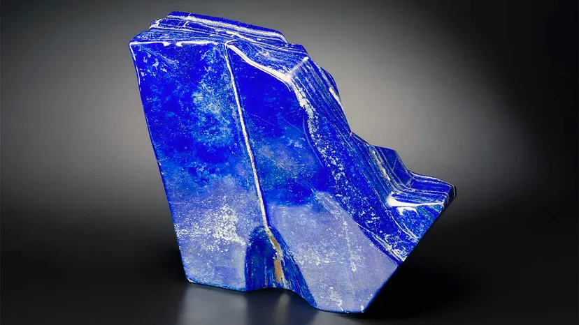
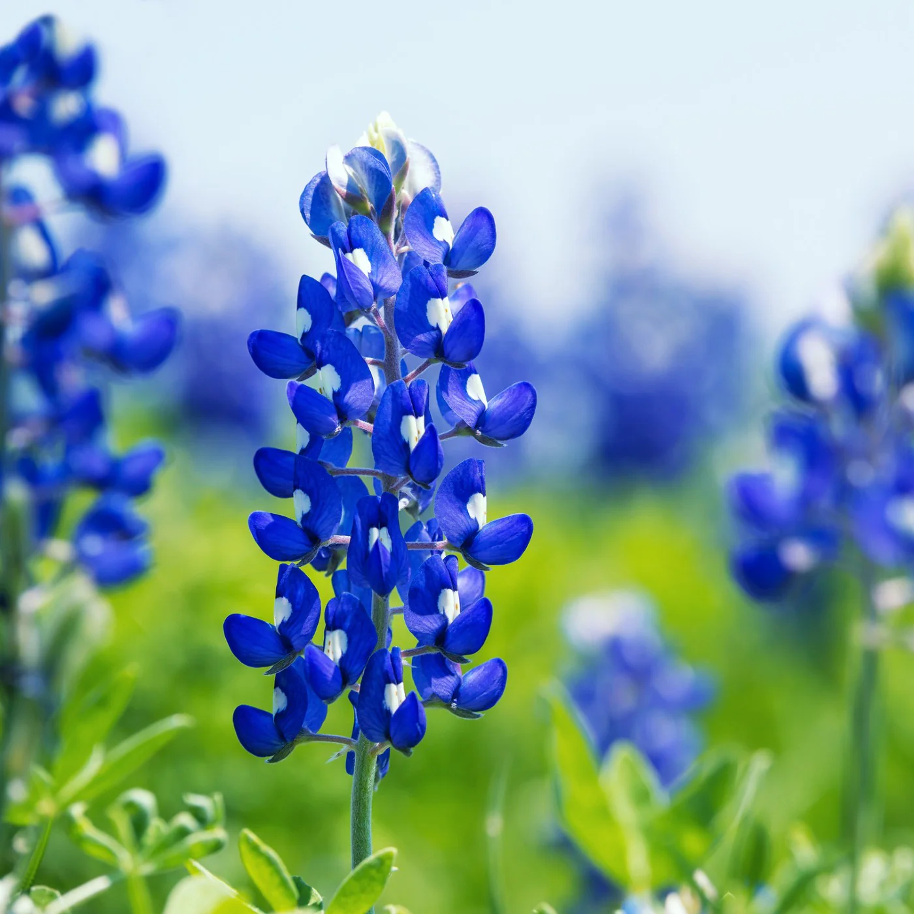
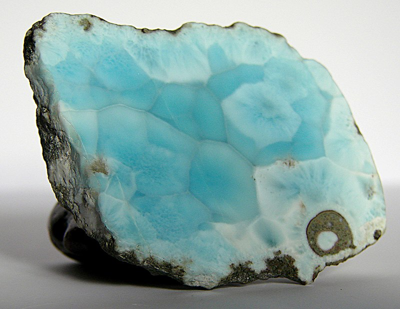

Here are examples of how blue can appear, where it may be found in nature, and how it has been used in art. Blue on Google Images.
Individual shades

Blue in nature



Here are examples of how blue can appear, where it may be found in nature, and how it has been used in art. Blue on Google Images.